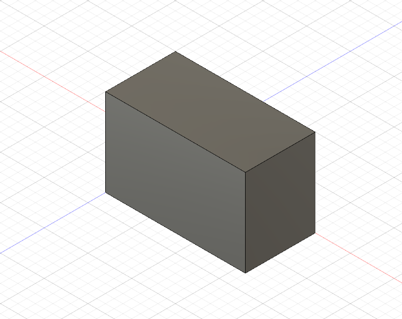

Week 4: 3D Printing
3D Design
I wanted to create a phone stand for my smartphone
First, I created the base and extruded it into a box.

Then, I carved out a slanted part for the phone to sit in and added small parts to the side.
After that, I hollowed out the box from the bottom.

Then, I added a hole for the USB-C cable.
I added a hole for the cable to exit the box.
Then, I added some campferd edges.

Cura
On the first start of Cura you have to select the correct Printer. I selected "Ultimaker 2+".
After loading the model in Cura, I saw that it was not aligned optimally, so I turned it around 90°.
Then I set the Material to PLA and set the nozzle to 0,6mm.
I set the Layer height to 0,3mm, because Mr.Ingrassia told us it should be about half of the nozzle size. The initial Layer height should be a bit thicker so I set it to 0,4mm.
For Wall thickness I selected 1,2mm, and for Wall Line count 2.
I set the Infill Density to 10% to make the print job faster.
I enabled supports everywhere with a Overhang angle of 50° and the Zig Zag pattern
Lastly, I added a brim with a width of 8mm.
The print will take 3h. Then I exported the .gcode-file to a SD Card and started the print job at using the Ultimaker 2+.
First Attempt
After letting the printer print the first layer it was obvious something was wrong.
I asked Mr. Ingrassia and he said, that a larger brim and slower speed should help. I adjusted the settings in cura and tried again.

This looked a lot better. The thing was, I didn't have 3h to spare so I exported the .gcode again but scaled it down by 50%. The print now should take less than 1h.

I took the time it was printing to start my documentation.

This was the finished print. It looks okay but there is one problem. Mr. Ingrassia pointed out the fact, that it would probably topple over when it held a phone, so I needed to change the design for it to make sense.
Second Design
To make it not fall over when putting in a phone, I had to make it longer, so it would be sturdier.
This is what I ended up with.
Printing it again would take a lot of time that I don't have this week, so It will remain a 3D Design for the time being.